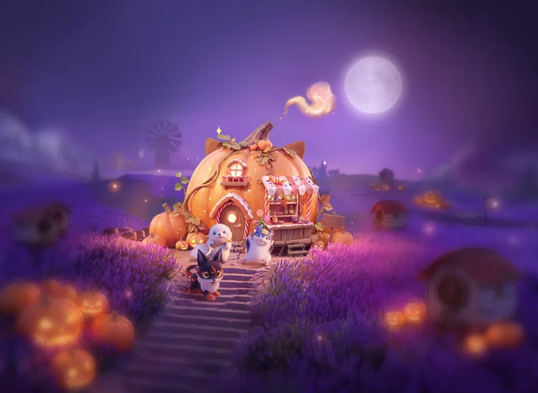
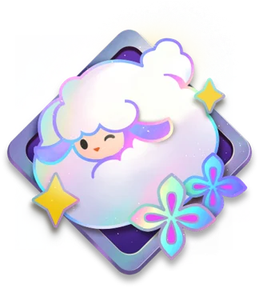
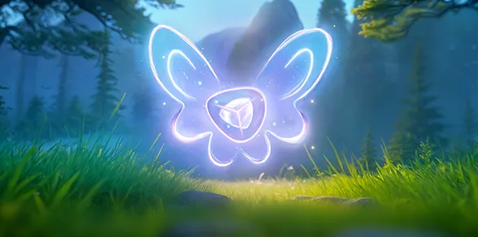
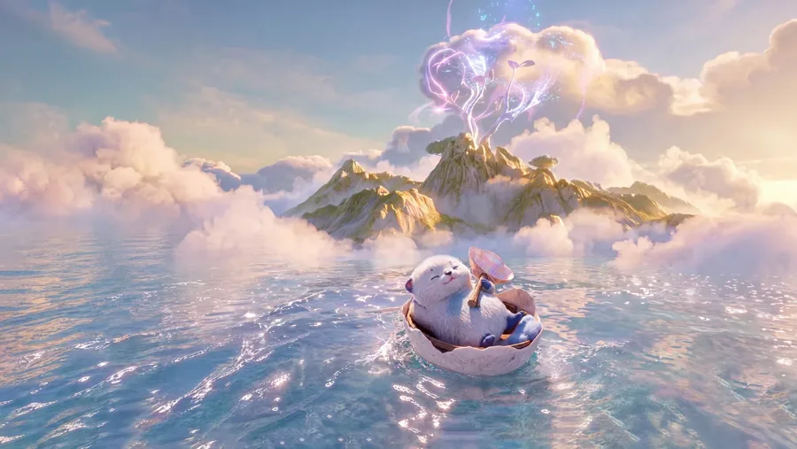

Night Parade Event
The limited-time event, Oct 29 – Dec 10.
- Candy House tiers and candy planner
- Every working perfume recipe for all 5 visitors
- Interactive recipe tester and all rewards

Badge Guide New
All 113 badges, from Bronze to Legendary, and how to earn each one.
- Interactive in-game badge case mockup
- Tap a badge, switch its rarity tier
- Privileges and titles each badge unlocks

Whisperwake Amber New
All 49 Lumin Amber in Whisperwake Isles and how to get each one.
- Time-of-day, tide and quest-linked ambers
- Interactive map of every amber
- Blessed Aniimo, Idols, Protectors and Lumin Collections

Egg Heist Loot Tables
Operation: Egg Heist, PvP and Team Mode on Normal, Hard, Nightmare and Chaos.
- Loot sources per mode
- Every egg, including scent variants and Prismana species
- Rank, daily chest and Display Case rewards
Friendship & Illusory
Friend Affinity, what each of the 6 levels unlocks, and how Illusory Friends work.
- Fastest daily Affinity routine
- Affinity planner and Illusory odds calculator
- How to get an Illusory Aniimo
Guides are updated for the Oct 28–30, 2026 game updates. Numbers come from the game's client data files. Anything the server decides (like drop odds) is marked on each page.